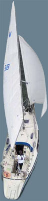

S/Y ANNA
Sunwind 27+

Tervetuloa S/Y Annan uusituille sivuille. Toistaiseksi vasta 2 sivua on valmiina, joten vain etusivu ja S/Y Anna-sivut toimivat. Kyllä tämä tästä vielä...
Sitä odotellessa tässä linkki vanhoille sivuille.
S/Y Anna on Harrin ja Petterin yhteinen
harraste. Tähän
harrastamiseen on purjehduksen lisäksi kuulunut myös
kaikenlaiset
rakentelut ja virittelyt, osa tarpeen vuoksi, osa ihan
vaan sisäisen
insinööriyden johdattamana. Välillä ideoita suorastaan
tulvii, eikä niitä
malta olla kokeilematta käytännössä, vaikkei kaikkea
oikeasti tarvitsikaan.
Näillä sivuilla rakentelut ja virittelyt ovat pääasiassa,
jos vaikka jollekulle
olisi jostain niistä hyötyä.
Info
Nyt Sunwind-keskustelua myös Facebookissa. Tutustu täällä
Päivitetty 12.5.2011
Palaute
Palautetta ja ideoita voit lähettää osoitteeseen harrihoo åt iki . fi